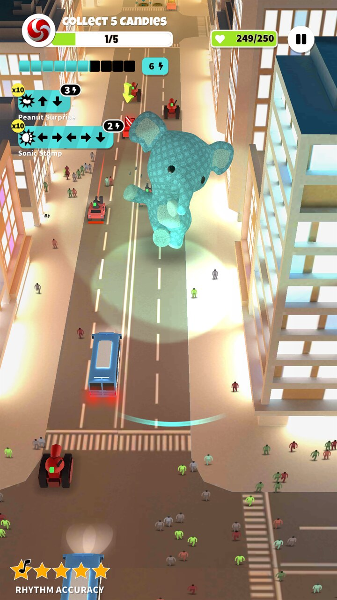
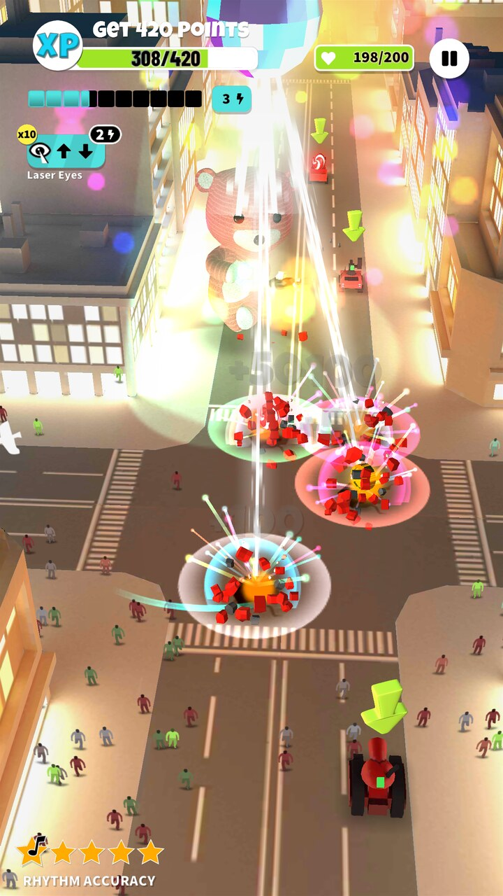
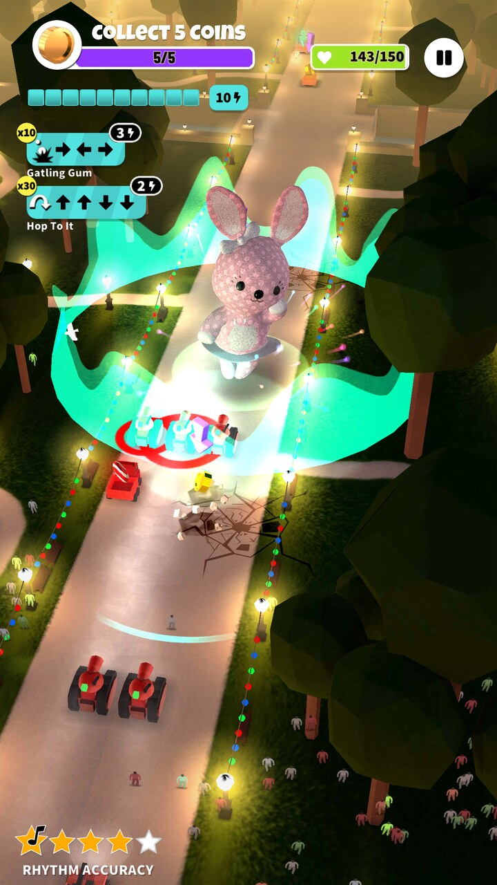
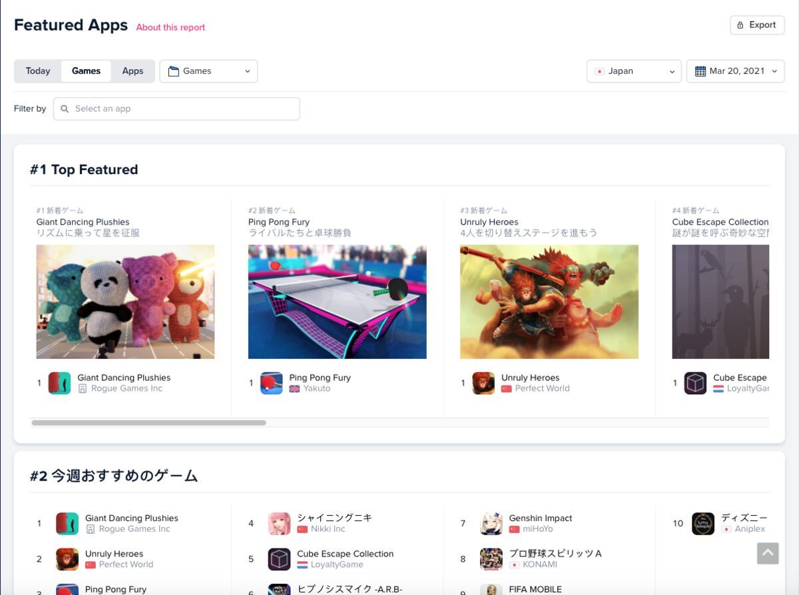
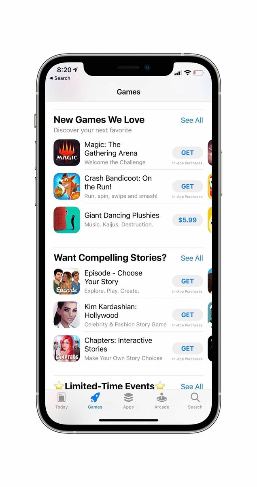
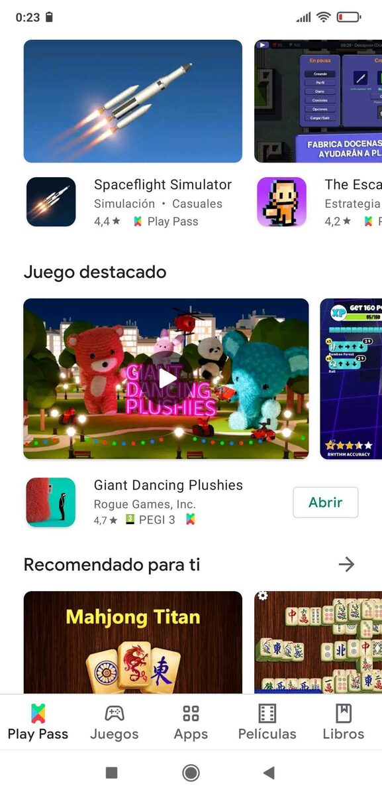
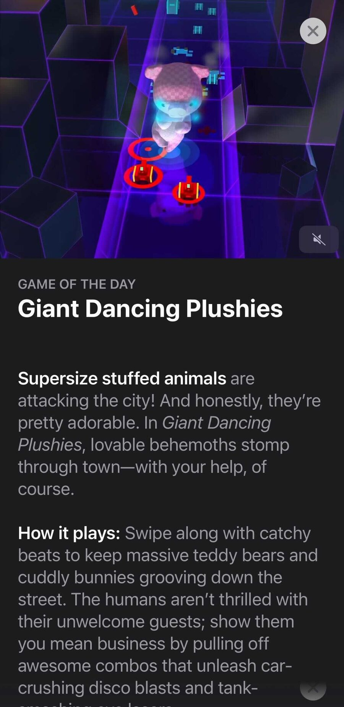
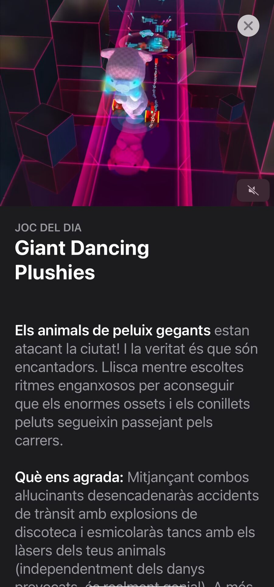

Giant Dancing Plushies
Juego de acción rítmica ligera: controlas peluches gigantes (kaijus) que bailan por las calles de la ciudad, aplastando coches enemigos y esquivando a los civiles al ritmo de la música. Desarrollado en Unity para Android (diciembre de 2020) e iOS (marzo de 2021), publicado por Rogue Games.
Ficha rápida
| Campo | Valor |
|---|---|
| Rol | Continuación del desarrollo y distribución |
| Estudio | Dabadu Games |
| Editor | Rogue Games |
| Plataformas | Android (dic. 2020), iOS (mar. 2021) |
| Precio | De pago en iOS y Android (5,99 $ / 6,99 €) · incluido en Google Play Pass |
| Idiomas | 6 |
| Género | Ritmo / acción ligera |
| Estado | Ya no disponible |
Destacados
- Más de 51.000 jugadores.
- Continuación de un proyecto ya iniciado: completé el desarrollo y me encargué de la distribución en la App Store y Google Play.
- #1 Top Featured en la App Store (marzo de 2021).
- "New Game" y "New Games We Love" de Apple en el lanzamiento de iOS.
- "Game of the Day" de Apple (mayo de 2021) y "Joc del dia" (junio de 2021).
- Destacado en Google Play ("Juego destacado") en el lanzamiento de Android (diciembre de 2020) e incluido en Google Play Pass, donde Google lo destacó en el blog oficial del servicio (enero de 2021).
- Reseñas: TouchArcade, Pocket Gamer y 148Apps. Pocket Gamer lo describió como "one of our highest-rated games of the year so far".
- Valoración de los usuarios de unas 4,6–4,7 estrellas.
Imágenes
Jugabilidad



#1 Top Featured en la App Store (Japón, marzo de 2021)

"New Games We Love" de Apple (marzo de 2021)

Destacado en Google Play (diciembre de 2020)

Apple — "Game of the Day" (mayo de 2021)

Giant Dancing Plushies — Apple's "Game of the Day"
Supersize stuffed animals are attacking the city! And honestly, they're pretty adorable. In Giant Dancing Plushies, lovable behemoths stomp through town — with your help, of course.
How it plays: Swipe along with catchy beats to keep massive teddy bears and cuddly bunnies grooving down the street. The humans aren't thrilled with their unwelcome guests; show them you mean business by pulling off awesome combos that unleash car-crushing disco blasts and tank-smashing eye lasers.
Why we love it: Despite all the property damage, it's seriously cute. And the plushies are upgradable and customizable. A green Oinkster the pig with 'splodier Flatulence? Why not!
Don't miss: Wish you could dance to different music? Gain enough XP and you can unlock the ability to use your own music playlist. Pick a favorite song and watch your kaiju get down.
Meet the creator: Dabadu Games is a small studio based in Barcelona. Giant Dancing Plushies was conceived while one of the game's designers was waiting in line at the grocery store and listening to happy tunes playing over the speakers.
Apple — "Joc del dia" (junio de 2021)

Giant Dancing Plushies — "Joc del dia" d'Apple
Els animals de peluix gegants estan atacant la ciutat! I la veritat és que són encantadors. Llisca mentre escoltes ritmes enganxosos per aconseguir que els enormes ossets i els conillets peluts segueixin passejant pels carrers.
Què ens agrada: Mitjançant combos al·lucinants desencadenaràs accidents de trànsit amb explosions de discoteca i esmicolaràs tancs amb els làsers dels teus animals (independentment dels danys provocats, destrosso tot). A més, pets explosius? Per què no!
Consell ràpid: T'estimes més caminar al ritme de la teva pròpia música? Amb prou experiència pots fer sonar una llista de reproducció de la plataforma que vulguis. Selecciona la teva cançó preferida i mira com balla el teu monstre.
Coneix el desenvolupador: Dabadu Games és un petit estudi establert a Barcelona. Giant Dancing Plushies es va concebre mentre un dels desenvolupadors del joc escoltava l'animada música que sonava en una botiga d'alimentació.
Prensa
TouchArcade — 11 de marzo de 2021 — "'Giant Dancing Plushies' is a Rhythm-Based Dancing Game from the Makers of 'It's Full of Sparks'"
After cutting their teeth on more casual experiences like GardenLab and DisMonster, Dabadu Games released the explosive platformer It's Full of Sparks back in early 2018, a game we enjoyed very much at the time. Now they've partnered with publisher Rogue Games to bring a similarly quirky title to iOS devices today called Giant Dancing Plushies.
You control gigantic stuffed animals using light rhythm-based gameplay in order to stomp through the city dispatching all opposing forces and getting your groove on in the process. The city around you literally pulses to the beat and your giant plushies strike some seriously incredible poses as they merrily destroy everything in their path.
While there's certainly a rhythm-based element to the gameplay, it's not as strict as most games in the genre and is described as more of a dancing simulator by Dabadu. … If you enjoy Crypt of the NecroDancer or similar rhythm games, I think you'll find a lot to enjoy here too.
Pocket Gamer — 15 de marzo de 2021 — noticia de lanzamiento
"Giant Dancing Plushies, a light rhythm game by Rogue Games Inc., is now out for both iOS and Android. … The title is targeted at people who like dancing and features a Kaiju who dances across the streets."
Pocket Gamer — 14 de abril de 2021 — consejos
"Giant Dancing Plushies is unlike any other mobile game you've played before. … You play as a huge teddy bear who dances in the streets of cities, starting with New York. … The game's graphics and colors are beautiful and the music will make you want to bop your head … Giant Dancing Plushies is awesome, and there's a reason why it's one of our highest-rated games of the year so far."
148Apps — 18 de marzo de 2021 — reseña
"Giant Dancing Plushies is a game where you control building-sized stuffed animals. … The gameplay isn't all that complicated, but it doesn't feel like it needs to be."
Pocket Gamer — abril de 2021 — incluido en "The best mobile games of 2021 so far".
Notas
- Se publicó primero como exclusivo de Android en diciembre de 2020 y llegó a iOS en marzo de 2021.
- Destacado de Google Play Pass: Quicksave: The latest from Google Play Pass — blog.google, 29 de enero de 2021.